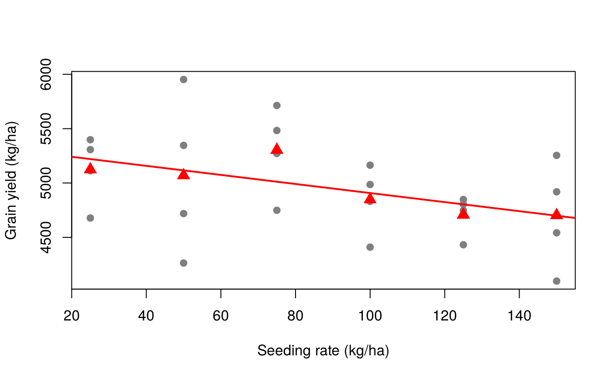

15 Contrast analysis
Multiple comparison procedures (Chapter 13) compare treatment means without a specific plan. Most experiments, however, are designed to answer specific questions: Is the new fungicide better than the old ones? Do organic sources differ from inorganic ones? How does yield respond to increasing doses of nitrogen? Such questions are answered more powerfully by contrasts planned before the experiment.
15.1 Contrasts
A contrast among \(t\) treatment means is a linear combination
\[L = \sum_{i=1}^{t} c_i \mu_i \qquad \text{with} \qquad \sum_{i=1}^{t} c_i = 0\]
For example, with four treatments, \(L = \mu_1 - \mu_2\) compares treatments 1 and 2, and \(L = 3\mu_1 - \mu_2 - \mu_3 - \mu_4\) compares treatment 1 with the average of the other three.
The contrast is estimated by \(\hat L = \sum c_i \bar y_i\), with standard error
\[\text{SE}(\hat L) = \sqrt{\text{EMS}\sum_i \frac{c_i^2}{r_i}}\]
and its sum of squares (with 1 df) is
\[\text{SS}(L) = \frac{\left(\sum_i c_i T_i\right)^2}{r \sum_i c_i^2}\]
where \(T_i\) are the treatment totals. \(H_0: L = 0\) is tested by \(F = \text{SS}(L)/\text{EMS}\) with \((1, \text{error df})\) degrees of freedom, or equivalently by \(t = \hat L / \text{SE}(\hat L)\).
15.1.1 Orthogonal contrasts
Two contrasts with coefficients \(c_i\) and \(d_i\) are orthogonal if \(\sum c_i d_i / r_i = 0\) (for equal replication, \(\sum c_i d_i = 0\)). A set of \(t - 1\) mutually orthogonal contrasts splits the treatment sum of squares exactly into \(t - 1\) independent single-df components:
\[\text{TrSS} = \text{SS}(L_1) + \text{SS}(L_2) + \cdots + \text{SS}(L_{t-1})\]
15.2 Example: planned comparisons among virus treatments
In the sweet potato experiment (Chapter 13), natural questions are:
- Does virus infection reduce yield? (healthy
ooversus the three infected treatments) - Is infection by both viruses worse than infection by one? (
ccandffversusfc) - Do the two viruses differ? (
ccversusff)
| Contrast | oo |
cc |
ff |
fc |
|---|---|---|---|---|
| \(L_1\): healthy vs infected | 3 | −1 | −1 | −1 |
| \(L_2\): single vs double infection | 0 | 1 | 1 | −2 |
\(L_3\): cc vs ff
|
0 | 1 | −1 | 0 |
Each row sums to zero, and every pair of rows is orthogonal (e.g. \(3 \times 0 + (-1)(1) + (-1)(1) + (-1)(-2) = 0\)).
C <- cbind(L1 = c(3, -1, -1, -1), L2 = c(0, 1, 1, -2), L3 = c(0, 1, -1, 0))
colSums(C) # each contrast sums to zero#> L1 L2 L3
#> 0 0 0
crossprod(C) # off-diagonal zeros: mutually orthogonal#> L1 L2 L3
#> L1 12 0 0
#> L2 0 6 0
#> L3 0 0 215.2.1 Method 1: contrasts in aov()
Assign the contrast matrix to the treatment factor (the order of the rows must match the order of the factor levels), then split the treatment sum of squares in summary():
library(agricolae)
data(sweetpotato)
sp <- sweetpotato
sp$virus <- factor(sp$virus, levels = c("oo", "cc", "ff", "fc"))
contrasts(sp$virus) <- C
model <- aov(yield ~ virus, data = sp)
summary(model, split = list(virus = list("Healthy vs infected" = 1,
"Single vs double" = 2,
"cc vs ff" = 3)))#> Df Sum Sq Mean Sq F value Pr(>F)
#> virus 3 1170 390 17.3 0.00073 ***
#> virus: Healthy vs infected 1 344 344 15.3 0.00447 **
#> virus: Single vs double 1 613 613 27.2 0.00080 ***
#> virus: cc vs ff 1 214 214 9.5 0.01507 *
#> Residuals 8 180 22
#> ---
#> Signif. codes: 0 '***' 0.001 '**' 0.01 '*' 0.05 '.' 0.1 ' ' 1The three single-df sums of squares add up to the treatment SS (344.1 + 612.5 + 213.6 = 1170.2). All three contrasts are significant: infection reduces yield; double infection is worse than single infection; and chlorotic stunt virus (cc) reduces yield more than feathery mottle virus (ff).
15.2.2 Method 2: contrasts with emmeans
emmeans estimates each contrast with its standard error and t test. Dividing the coefficients by a constant does not change the test, but makes the estimate interpretable; here \(L_1/3\) is “healthy minus the average of the infected treatments”:
library(emmeans)
em <- emmeans(model, ~ virus)
contrast(em, list(
"Healthy - mean(infected)" = c(3, -1, -1, -1) / 3,
"mean(single) - double" = c(0, 1, 1, -2) / 2,
"cc - ff" = c(0, 1, -1, 0)
))#> contrast estimate SE df t.ratio p.value
#> Healthy - mean(infected) 12.4 3.16 8 3.912 0.0045
#> mean(single) - double 17.5 3.35 8 5.219 0.0008
#> cc - ff -11.9 3.87 8 -3.082 0.0151Healthy plants yielded 12.4 kg/plot more than the average of infected plants, and single infections yielded 17.5 kg/plot more than the double infection. The \(t\) values are the square roots of the F values above.
Contrasts should be planned before the data are seen. If contrasts are chosen after looking at the means, or if many non-orthogonal contrasts are tested, adjust for multiplicity, for example with contrast(em, ..., adjust = "bonferroni") or Scheffé’s method (adjust = "scheffe").
15.3 Orthogonal polynomials for quantitative treatments
When the levels of a factor are quantitative and equally spaced (doses of fertiliser, seed rates, irrigation levels), the most informative contrasts describe the shape of the response: linear, quadratic, cubic, and so on. These are orthogonal polynomial contrasts. For equally spaced levels their coefficients are tabulated; R generates them with contr.poly():
contr.poly(4) # coefficients for 4 levels (scaled)#> .L .Q .C
#> [1,] -0.6708 0.5 -0.2236
#> [2,] -0.2236 -0.5 0.6708
#> [3,] 0.2236 -0.5 -0.6708
#> [4,] 0.6708 0.5 0.2236#> .L .Q .C
#> [1,] -3 1 -1
#> [2,] -1 -1 3
#> [3,] 1 -1 -3
#> [4,] 3 1 1For four levels the familiar integer coefficients are linear (−3, −1, 1, 3), quadratic (1, −1, −1, 1) and cubic (−1, 3, −3, 1).
15.3.1 Example: seeding rate of rice
Gomez and Gomez (1984) (Table 5.12) report the grain yield (kg/ha) of rice (IR8) sown at six seeding rates (25, 50, 75, 100, 125 and 150 kg/ha) in an RCBD with four replications (gomez.seedrate in agridat):
#> 25 50 75 100 125 150
#> 5124 5070 5304 4848 4708 4703
sr$rate_f <- factor(sr$rate)
contrasts(sr$rate_f) <- contr.poly(6)
model_sr <- aov(yield ~ rep + rate_f, data = sr)
summary(model_sr, split = list(rate_f = list(Linear = 1, Quadratic = 2, Cubic = 3,
Quartic = 4, Quintic = 5)))#> Df Sum Sq Mean Sq F value Pr(>F)
#> rep 3 1944361 648120 5.86 0.0074 **
#> rate_f 5 1198331 239666 2.17 0.1128
#> rate_f: Linear 1 760035 760035 6.87 0.0192 *
#> rate_f: Quadratic 1 74405 74405 0.67 0.4249
#> rate_f: Cubic 1 113301 113301 1.02 0.3274
#> rate_f: Quartic 1 90630 90630 0.82 0.3796
#> rate_f: Quintic 1 159960 159960 1.45 0.2477
#> Residuals 15 1658376 110558
#> ---
#> Signif. codes: 0 '***' 0.001 '**' 0.01 '*' 0.05 '.' 0.1 ' ' 1This example shows the power of planned contrasts. The overall F test for seeding rate is not significant (\(p = 0.11\)), because the treatment SS is spread over 5 df. But the linear component alone is significant (\(p = 0.019\)), while the quadratic and higher components are not. Yield decreases linearly as the seeding rate increases over this range. The slope of that line is estimated by regressing yield on the numeric rate:
#> Estimate Std. Error t value Pr(>|t|)
#> -4.16800 1.58818 -2.62439 0.01669Each additional kilogram of seed per hectare reduces yield by about 4.2 kg/ha: within the range tested, higher seeding rates gave no yield advantage.
plot(yield ~ rate, data = sr, pch = 19, col = "grey50",
xlab = "Seeding rate (kg/ha)", ylab = "Grain yield (kg/ha)")
points(as.numeric(names(tapply(sr$yield, sr$rate, mean))),
tapply(sr$yield, sr$rate, mean), pch = 17, cex = 1.5, col = "red")
abline(a = mean(sr$yield) - coef(fit)["rate"] * mean(sr$rate), b = coef(fit)["rate"],
col = "red", lwd = 2)
15.3.2 Example: nitrogen in a split-plot experiment
The same approach applies within any design. In the oats split-plot experiment (Chapter 14) nitrogen had four equally spaced levels:
library(MASS)
oats2 <- oats
contrasts(oats2$N) <- contr.poly(4)
summary(aov(Y ~ V * N + Error(B / V), data = oats2),
split = list(N = list(Linear = 1, Quadratic = 2, Cubic = 3)))#>
#> Error: B
#> Df Sum Sq Mean Sq F value Pr(>F)
#> Residuals 5 15875 3175
#>
#> Error: B:V
#> Df Sum Sq Mean Sq F value Pr(>F)
#> V 2 1786 893 1.49 0.27
#> Residuals 10 6013 601
#>
#> Error: Within
#> Df Sum Sq Mean Sq F value Pr(>F)
#> N 3 20020 6673 37.69 2.5e-12 ***
#> N: Linear 1 19536 19536 110.32 1.1e-13 ***
#> N: Quadratic 1 480 480 2.71 0.11
#> N: Cubic 1 4 4 0.02 0.89
#> V:N 6 322 54 0.30 0.93
#> V:N: Linear 2 168 84 0.48 0.62
#> V:N: Quadratic 2 11 6 0.03 0.97
#> V:N: Cubic 2 142 71 0.40 0.67
#> Residuals 45 7969 177
#> ---
#> Signif. codes: 0 '***' 0.001 '**' 0.01 '*' 0.05 '.' 0.1 ' ' 1Almost all of the nitrogen sum of squares (19,536 of 20,020) is linear; the quadratic and cubic components and their interactions with variety are not significant. The response of oats to nitrogen was linear over 0–0.6 cwt/acre, the same for all three varieties.
Orthogonal polynomial coefficients from contr.poly() assume equally spaced levels. For unequally spaced levels use contr.poly(n, scores = c(0, 30, 60, 120)), or fit the regression directly with the numeric dose as in lm(yield ~ rep + rate + I(rate^2)). Response curves that are not polynomials are covered in Chapter 22.
15.4 Contrasts in factorial experiments
In a \(2^n\) factorial experiment the main effects and interactions are themselves orthogonal contrasts among the treatment combinations. The built-in npk data are a \(2^3\) factorial on peas in six blocks; with factors coded as two-level factors, each effect has 1 df:
#> Df Sum Sq Mean Sq F value Pr(>F)
#> block 5 343 68.7 4.45 0.0159 *
#> N 1 189 189.3 12.26 0.0044 **
#> P 1 8 8.4 0.54 0.4749
#> K 1 95 95.2 6.17 0.0288 *
#> N:P 1 21 21.3 1.38 0.2632
#> N:K 1 33 33.1 2.15 0.1686
#> P:K 1 0 0.5 0.03 0.8628
#> Residuals 12 185 15.4
#> ---
#> Signif. codes: 0 '***' 0.001 '**' 0.01 '*' 0.05 '.' 0.1 ' ' 1Only nitrogen (N) and potassium (K) main effects are significant. (The N:P:K interaction is not shown because it was confounded with blocks in this experiment.)
Exercises
- In the
PlantGrowthdata, test two orthogonal contrasts: control vs the two treatments, and treatment 1 vs treatment 2. - In the
InsectSpraysdata, sprays C, D and E are believed to belong to a newer chemical group. Construct and test a contrast comparing them with A, B and F (use square-root transformed counts). - The
gomez.nitrogendata inagridatcontain nitrogen content of rice plants under eight fertiliser treatments. Read the help page and construct a set of meaningful contrasts. - Fit linear and quadratic polynomials to the nitrogen response of oats using
lm(Y ~ B + V + Nn + I(Nn^2)), whereNnis the numeric nitrogen level. Is the quadratic term needed?